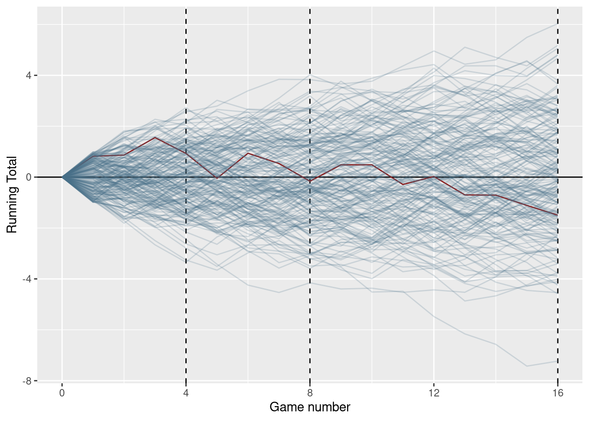
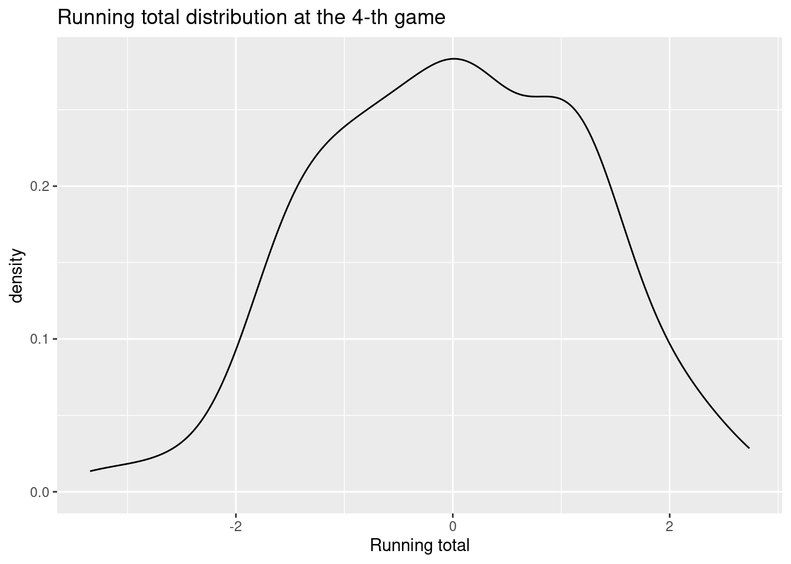
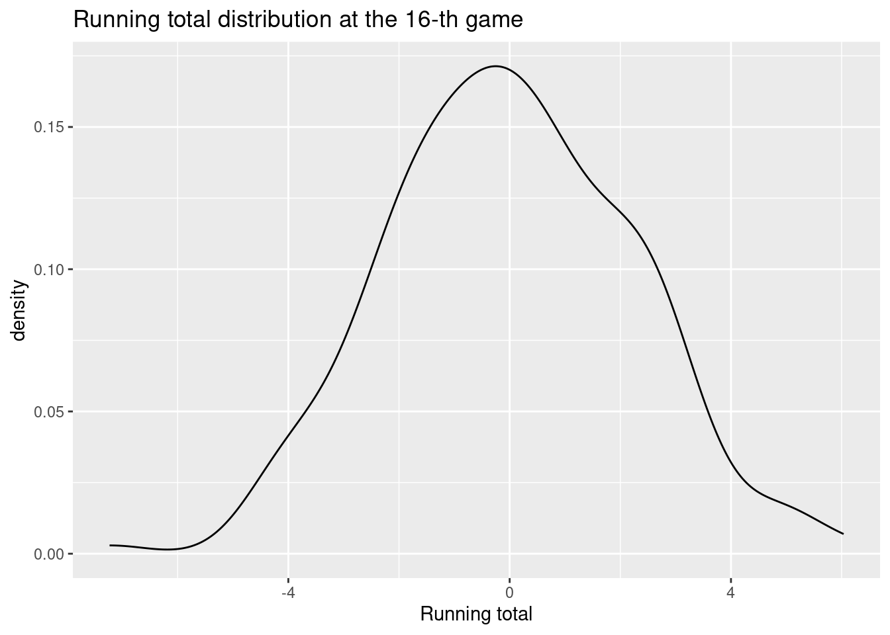

The density of the distribution is constant on the interval [-1, 1] and zero elsewhere. The mean of the distribution is zero and the variance is 1/3. The distribution function is linear on the interval [-1, 1].
unif_dens_plt <-ggplot() +xlim(c(-2, 2)) +stat_function(fun = dunif, args =list(min =-1, max =1), n =1000) +labs(x ="x",y ="Density" )unif_dens_plt
Figure 5.1: Density of the uniform distribution on [-1, 1]
5.1.1 Sampling from the Uniform Distribution
## Generate 10 random numbers from the uniform distribution on [-1, 1]x_unif <-runif(10, min =-1, max =1)x_unif
## Count the number of values less than zerosum(x_unif <0)
[1] 6
## Count the number of values greater than 0.5
# Compute the probability of the event X < 0 using the punif functionpunif(0, min =-1, max =1)
[1] 0.5
# Compute the probability of the event X > 0.5 using the punif function1-punif(0.5, min =-1, max =1)
[1] 0.25
Compare the result above with the probability of the event X < 0.
## Compute the average of the values (mean function)## Compute the variance of the values (var function)
Compare the results above with the expected value and variance of the uniform distribution on [-1, 1].
Rerun the simulation with 10,000 values and compare the share of outcomes less than -1 with the probability of the event X < -1 and the average and variance of the values with the expected value and variance of the uniform distribution on [-1, 1].
5.2 The Normal Distribution
The family of normal distributions is defined by two parameters: the mean \mu and the standard deviation \sigma. The density of the normal distribution is given by the formula:
Because we will use this distribution very often, we will introduce a special notation for the normal distribution:
X \sim N(\mu, \sigma^2)
For this course you don’t need to remember the density function of the normal distribution.
There are few properties of the normal distribution that you should remember, though. The first two properties relate the expected value and the variance of the normal distribution to its parameters \mu and \sigma:
means <-c(0, 0, 0, 2, 2, 2)sds <-c(0.2, 0.5, 1, 0.2, 0.5, 1)df <-expand_grid(mean =c(0, 2),sd =c(0.2, 0.5, 1),x =seq(-3, 5, length.out =200)) %>%mutate(y =dnorm(x, mean = mean, sd = sd),mean =paste0("mu = ", mean),sd =paste0("sigma = ", sd))# Plotggplot(df, aes(x = x, y = y, color = mean, lty = sd)) +geom_line() +labs(x ="x", y ="Density", color ="Parameters") +ggtitle("Normal distributions with different means and variances")
5.3 How Does the Normal Distribution Arise?
players_n <-200games_n <-16unif_games <-expand_grid(game =1:games_n,player =1:players_n) %>%mutate(## When used in mutate, n() returns the number of rows in a group of obs## When the data is not grouped as here, it retuns the number of obs in the whole tableresult =runif(n(), min =-1, max =1) ) %>%bind_rows(## Add a initial values so that all players start with 0tibble(player =1:players_n,game =0L,result =0, ) )unif_games <- unif_games %>%## Sort the data by player id and game idarrange(player, game) %>%## Groups the data by player, because we want the running totals to be calculated for each## player separatelygroup_by(player) %>%mutate(running_total =cumsum(result) )## Illustration onlyunif_games %>%ggplot(aes(x = game, y = running_total, group = player)) +geom_vline(xintercept =c(4, 8, 16), linetype =2) +geom_hline(yintercept =0) +geom_line(aes(color = player <2, alpha = player <2)) +scale_color_manual(values =c("skyblue4", "firebrick4")) +scale_alpha_manual(values =c(1/5, 1)) +scale_x_continuous("Game number", breaks =c(0, 4, 8, 12, 16)) +theme(legend.position ="none") +labs(y ="Running Total")

unif_games %>%filter(game ==4) %>%ggplot(aes(x = running_total)) +geom_density() +labs(title ="Running total distribution at the 4-th game") +labs(x ="Running total" )

unif_games %>%filter(game ==16) %>%ggplot(aes(x = running_total)) +geom_density() +labs(title ="Running total distribution at the 16-th game") +labs(x ="Running total" )

5.4 Probabilities and Quantiles of the Normal Distribution
As with the other continuous distributions, we can compute probabilities and quantiles of the normal distribution using the functions pnorm and qnorm, respectively.
Figure 5.2: Density of the standard normal distribution
Compute the probability of the event X < 0.5 for the standard normal distribution.
pnorm(0.5, mean=0, sd=1)
[1] 0.6914625
Compute the probability of the event X > 1.96 for the standard normal distribution.
Compute the probability of the event -1.3, 1 for the standard normal distribution.
5.5 Sampling from the Normal Distribution
Take a sample of 10 values from the standard normal distribution and store them in a variable x_norm.
x_norm <-rnorm(10, mean =0, sd =1)
# Count the number of values less than zerosum(x_norm <0)
[1] 7
Compare the result with the theoretical probability of the event X < 0.
# Compute the average of the values# Compute the standard deviation of the values
Compare your results with the expected value and variance of the standard normal distribution.